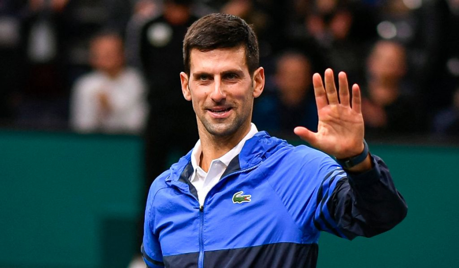

Australia i-a anulat viza lui Novak Djokovic si vrea sa-l deporteze

Australia i-a anulat viza lui Novak Djokovic din nou si intentioneaza sa-l deporteze, transmite BBC. Contestatia ramane singura optiune a tenismenului sarb.
Novak Djokovic era programat sa-l intalneasca in prima runda de la Australian Open pe conationalul sau Miomir Kecmanovic.
Djokovic ar urma sa primeasca „o nota de anulare a deciziei” cu informatii relevante si va fi invitat la ministru pentru a contesta revocarea.
Daca ministrul nu accepta contestatia lui Djokovic, vedeta tenisului se poate reintoarce in instanta pentru a face apel impotriva legalitatii puterii de a i se anula viza.
Daca nu va face acest lucru, sarbul va trebui sa paraseasca tara, daca nu, va fi deportat.
Daca ajunge in instanta este putin probabil ca sportivul sa poata rezolva problema pana incepe turneul de tenis.
Novak Djokovic a recunoscut, miercuri, intr-un comunicat dat publicitatii ca a comis o "eroare umana, cu certitudine nu intentionata", declarand la sosirea sa in Australia ca nu a calatorit in ultimele 14 zile de dinaintea zborulului. Liderul mondial al tenisului masculin a precizat, de asemenea, ca "a uitat sa relateze despre interviul si sedinta foto pentru L'Equipe", evenimente realizate dupa ce a fost depistat pozitiv cu Covid-19.
Djokovic, in varsta de 34 ani, se afla in centrul unei batalii juridice de la sosirea sa in aceasta tara, saptamana trecuta, dupa ce prezentat o scutire medicala pentru a evita cerinta de vaccinare obligatorie impusa de autoritatile australiene.
Desi Djokovic s-a conformat cu regulile de derogare medicala de la a fi vaccinat in statul Victoria, pentru a putea participa la Australian Open, in cadrul legislatiei Commonwealth a statului, sportivul nu poate ramane doar pe baza unei dispense motivate de infectare. Infectarea cu Sars-Cov-2 nu este considerat motiv suficient pentru exceptarea de la vaccinare.
Djokovic ar trebui sa arate dovezi medicale ca nu se poate vaccina din cauza contraindicatiilor medicale sau din cauza unei boli severe, inclusiv daca o persoana a fost diagnosticata cu Covid-19.